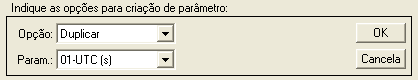
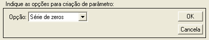
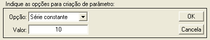
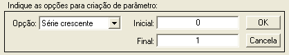
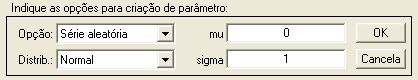
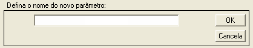

| Menu Dados |
 |
Criar
Novo Parâmetro
Essa operação
permite criar um novo parâmetro nas matrizes
de trabalho, com várias opções disponíveis.
Clique no menu “Dados ► Criar
novo parâmetro”. A Caixa de Diálogo solicitará que o usuário indique os
parâmetros
para a operação:





● No campo
“Opção”, escolha uma das opções de novo
parâmetro:
|
Opção |
Descrição |
| Duplicar
parâmetro |
Será
criado um parâmetro idêntico ao parâmetro selecionado já existente. |
| Série de zeros |
Será
criado um parâmetro em que todas as observações são zero. |
| Série de uns |
Será
criado um parâmetro em que todas as observações são iguais a 1. |
| Série constante |
Será
criado um parâmetro em que todas as observações são iguais a um valor
definido pelo usuário. |
| Série crescente |
Será
criado um parâmetro que varia linearmente entre dois valores definidos
pelo usuário, da primeira à última observação. |
| Série aleatória |
Será
criado um parâmetro que representa uma amostra aleatória de uma dada
função de distribuição de probabilidade. |
● Caso a opção
seja “Duplicar parâmetro”, indique o
parâmetro que deseja duplicar no campo “Param.”.
● A opções
“Série de zeros” e “Série de uns” não apresentam
parâmetros adicionais.
● Caso a opção
seja “Série constante”, indique o valor
desejado no campo “Valor”.
● Caso a opção
seja “Série crescente”, indique o valor
inicial e final nos campos “Inicial” e “Final” (pode ser decrescente).
● Caso a opção
seja “Série aleatória”, indique o tipo
de distribuição no campo “Distrib.”
e os parâmetros
de entrada nos campos correspondentes, à direita.
As opções são:
|
Distribuição |
Parâmetros |
| Beta |
a
b |
| Chi-Quadrada |
ν |
| Uniforme
Discreta |
N |
| Exponencial |
μ |
| F |
ν1
ν2 |
| Gama |
a
b |
| Lognormal |
μ
σ |
| Binomial
Negativa |
r
p |
| Normal |
μ
σ |
| Rayleigh |
b |
| T de Student |
ν |
| Uniforme |
N1
N2 |
| Weibull |
a
b |
Para descrições
detalhadas das distribuições, clique aqui.
A técnica usada
na criação de uma amostra aleatória de uma
dada distribuição consiste em gerar uma amostra aleatória uniforme [0,
1] e
mapeá-la através da curva inversa da função de distribuição de
probabilidade
desejada. Para tanto, o R_DAT
faz uso da função “icdf.m”
do toolbox
de estatística do MATLAB.
A cada alteração em um dos campos, o R_DAT apresentará um resultado preliminar.
Enquanto a
opção "Série aleatória" estiver selecionada, é posível obter o histograma dos dados
preliminares através do botão  na
Barra de Ferramentas.
na
Barra de Ferramentas.
Ao clicar “OK”,
o usuário deverá fornecer o nome do novo
parâmetro:

Após definir o
nome e pressionar “OK”, o novo parâmetro será
acrescentado à penúltima posição das matrizes de trabalho (antes de
“No.OBS.”).
| |
Análise de subcomutação | Renomear parâmetro y |
|